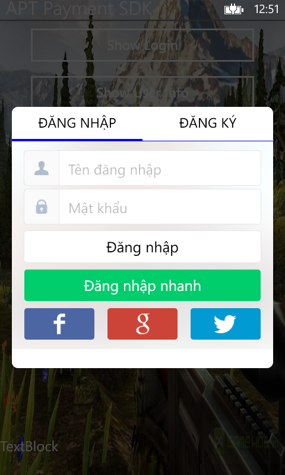
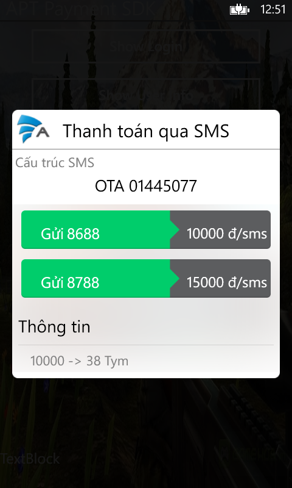
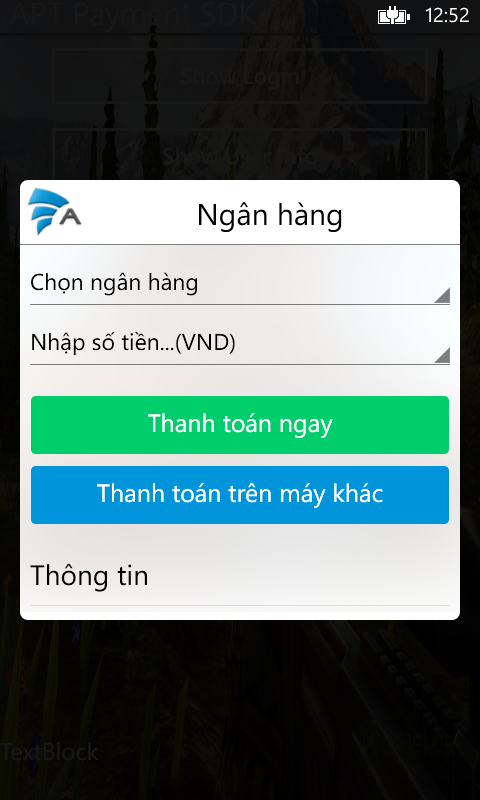
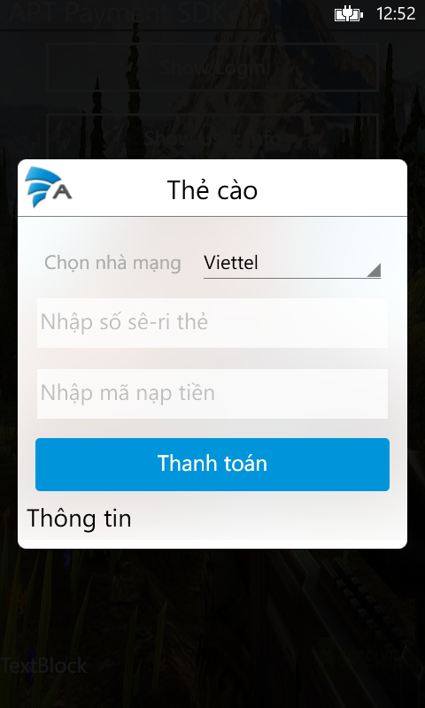

Get Started
Appota Payment SDK cho Windows Phone là cách đơn giản nhất để tích hợp thanh toán cho ứng dụng của bạn trên hệ thống Appota. SDK này cung cấp giải pháp cho các hình thức thanh toán: SMS, thẻ cào, internet banking và paypal Payment.
Các bước tích hợp SDK:
1. Download và add SDK reference
2. Cấu hình SDK
3. Cấu hình JSON
4. Tích hợp
5. Chay SDK sample
1. Add SDK reference
2. Cấu hình SDK
- Key lấy từ trang dev.appota.com:
<apiKey>Replace with your apiKey</apiKey>
<apikeySandbox>Replace with your Sanbox ApiKey<apikeySandbox>
<testSandbox>false</testSandbox>
- Notify Url : url hệ thống sẽ gọi sau khi thanh toán thành công
<notifyUrl>Replace with your notify Url</notifyUrl>
- Config Url : url của file json config. Xem phần 3.Cấu hình JSON
<configUrl>http://appvn.com/payment-winphone.php</configUrl>
- Để sử dụng tài khoản facebook đăng nhập, thêm các thông số:
<facebookAppId>Replace with facebookAppId</facebookAppId>
<facebookClientSecret>Replace with facebookClientSecret</facebookClientSecret>
- Để sử dụng tài khoản Google đăng nhập, thêm các thông số:
<googleClientID>Replace with googleClientID</googleClientID>
<googleClientSecret>Replace with googleClientSecret</googleClientSecret>
- Để sử dụng tài khoản Twitter đăng nhập, thêm các thông số:
<twitterConsumerKey>Replace with twitterConsumerKey</twitterConsumerKey>
<twitterConsumerKeySecret>Replace with twitterConsumerKeySecret</twitterConsumerKeySecret>
3. Cấu hình JSON
Appota Game SDK cung cấp một phương thức cấu hình tiện lợi với nhiều tùy chọn cho nhà phát triển. Bạn cần thực hiện các bước sau để sử dụng phương thức này:
<configUrl> của file cấu hình AppotaConfig.xml4. Tích hợp SDK
Khai báo: AppotaGameSDK gameSDK;
Khởi tạo: gameSDK = new AppotaGameSDK(AppotaSDKCallback _callBack);
Các phương thức SDK hỗ trợ:
- gameSDK.ShowUserInfo(); // Show user info UI
- gameSDK.MakePayment(); // Show payment UI
- gameSDK.SwitchAccount(); // Switch between accounts
- gameSDK.LogoutAccount(); // Logout account
AppotaSDKCallback là giao diện (interface) để nhận các hàm callback từ SDK như LoginCallback hoặc PaymentCallback.
public interface AppotaSDKCallback
{
void onPaymentSuccess(TransactionResult result);
void onPaymentError(String message);
void onUserLoginSuccess(UserLoginResult result);
void onUserLoginError(string message);
void onUserRegisterSuccess(UserLoginResult result);
void onUserRegisterError(string message);
}
5. Project SDK Sample
Xem thêm sample code được kèm theo bộ SDK để thêm chi tiết.
1 số hình ảnh SDK sample:
 

  